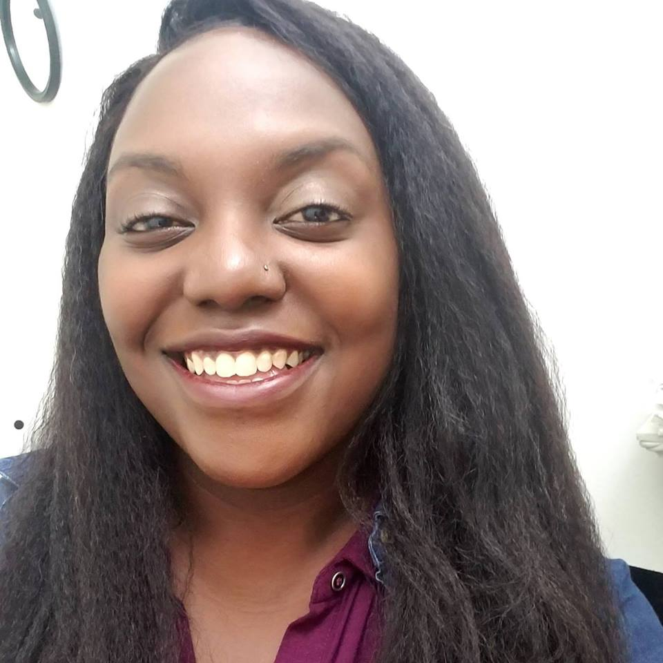

About Misha Cadet
Bridging Public Health & Technology
Misha Cadet is from Chicago, IL by way of Port-au-Prince Haiti. Misha likes traveling, spending time with her friends and family, playing softball, summer beach volleyball and hitting up new restaurants with her friends.
She received her Bachelor's in Public Health from the University of Illinois in Champaign, IL. Misha finished her Master's in Public Health Policy in 2013 and currently works for Rush University Medicial Center managing clinical placements and teaching sexual health education.